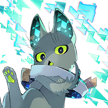

View script in lua
|  |
【猫？】 見下すな、仰ぎ見ろ ワタシに耳をかたむけよ |
| 【アルハン】 ワタシはアルハン 継承者を導く者 |
|
| 【<%player>】 …？ |
|
| 【アルハン】 まもなく世界は終わり 歴史は幕を閉じる |
|
| 【アルハン】 人類の歴史は |
|
| 【アルハン】 歴史の節目節目に来襲するバルバロイ 人間たちはその都度武器を取り、妨げ続けてきた |
|
| 【アルハン】 だがそれも限界だ 未曾有の脅威が迫っている |
|
| 【アルハン】 これを阻めるのは 世界においてただひとり |
|
| 【アルハン】 お前だ |
|
| 【アルハン】 キサマのあとに 歴史は続かない |
|
| 【アルハン】 世界がどうなろうとな |
|
| 【アルハン】 過去、バルバロイを討ったのは伝説の武器たちだ それを現在まで継承してくれた者たちがいる |
|
| 【アルハン】 だがその武器は時の流れにより風化し 今や元来の力を発揮できる状態ではない |
|
| 【アルハン】 終末を回避するためには 武器の歴史へと潜り… |
|
| 【アルハン】 それらの記憶を呼び覚ます必要がある |
|
| 【アルハン】 武器に秘められた歴史の可能性を キサマが体験し、一本に |
|
| 【アルハン】 さすれば現在へと蘇る… キサマが選んだ唯一無二の伝説が |
|
| 【アルハン】 その |